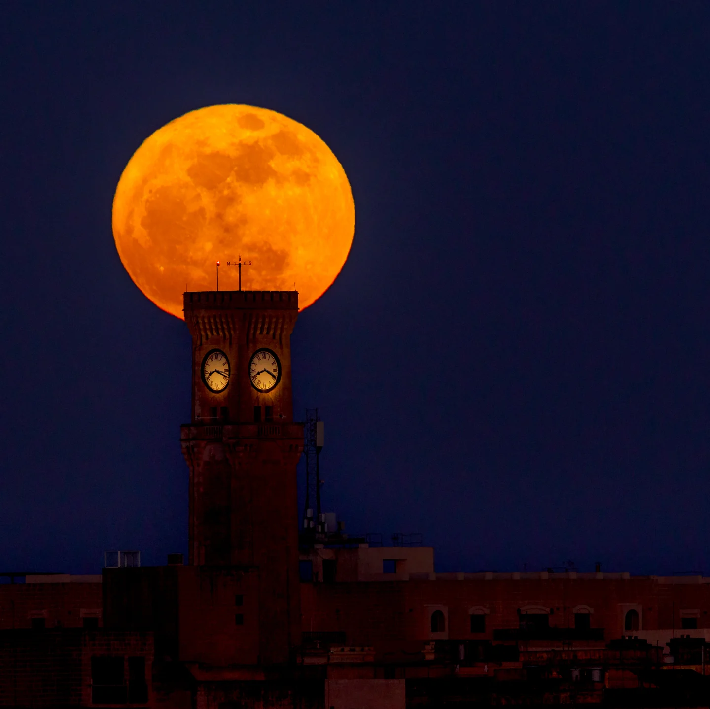

Tokki Café & Restaurant
Tokki lists its café and restaurant in Mtarfa Square and describes a menu built around Maltese recipes.
Western Malta
A clock tower on the ridge. Explore the former military quarter, then find Maltese cooking and everyday errands around the town square.

The Clock Tower dates to around 1895 and stands at the corner of Triq it-Torri and Triq il-Gilju. Its Grade 1 protection is recorded in the Government Gazette. The same notice records Grade 2 protection for the former military hospital on Triq l-Imtarfa, now home to the Sir Temi Zammit school.
The medieval St Lucy chapel appears in the local council’s history. The independent Catholic parish dates to 2004. Use the tower exterior to orient yourself and check visiting arrangements with the local council if you are planning an interior visit.
The Town Centre on Triq ir-Reġimenti Maltin gives you a second reference point away from the former hospital.
Tokki lists its café and restaurant in Mtarfa Square and describes a menu built around Maltese recipes.
Food producer Josefa lists Angelo Store at 56 Triq l-Imtarfa as a stockist.
Route 51 serves Valletta and route 182 serves Mater Dei. Primary HealthCare lists Mtarfa in the Rabat Health Centre catchment.
Use the corner of Triq it-Torri and Triq il-Gilju for the tower and Triq ir-Reġimenti Maltin for the Town Centre. If you are meeting someone in the square or visiting the former hospital area, ask for the exact street before choosing a bus stop.
Route 51 lists two stops called Mtarfa, numbered 180 and 188, and a separate Regimenti stop numbered 183. Match the stop number and direction in the operator timetable. The journey planner shows current changes for the day of your visit.
The marker shows the tower footprint at the corner of Triq it-Torri and Triq il-Gilju.
Map data © OpenStreetMap contributors.
Editorial sources reviewed 17 November 2026.
Nexus Marketplace
See local homes and explore food, shops and everyday places around the neighbourhood.
Mapped places within 2 km of the centre. This can include nearby neighbourhoods.